（这篇又是回忆前几天的行程，接在阿斯旺那天后面，当时时间太赶了，实在是没空写）
这一天又是一大早，4点就要起来了。
我们住的邮轮今天还停在阿斯旺，中午就会开船，因此需要在中午之前赶回来，这也是为啥要这么早出发。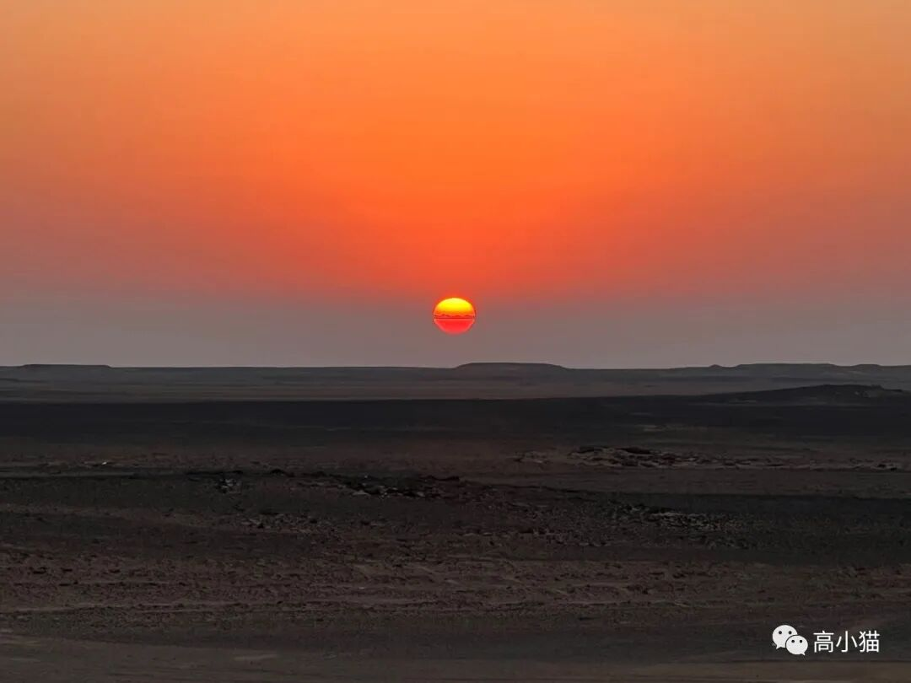
看到了日出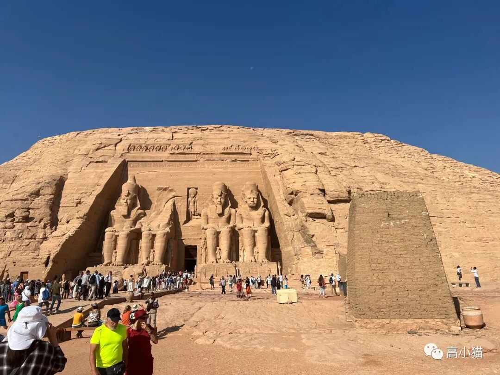
阿布辛贝神庙阿布辛贝神殿位于阿斯旺的西南边开车大约一个半小时的地方。还是挺远的。不过它的雕像超级大，而且保存得很完整。有一种乐山大佛的感觉（乐山大佛我好像还没去过，也不知道哪个更大）。
这座神庙是拉美西斯二世，著名的古埃及自恋狂法老为自己修建的神庙。在古埃及非常多的文物都和这个法老有关系，可能类似于中国的乾隆皇帝吧，喜欢到处留下自己的痕迹。
（之所以叫阿布辛贝神殿，据说是为了纪念发现这个神庙的一个小孩子，叫阿布辛贝。）
拉美西斯二世不仅建了这个神庙，还为他最喜欢的老婆，尼菲尔泰利在旁边建了一座神庙。不过不管是为谁建的神庙，他自己的雕像肯定是最多的。
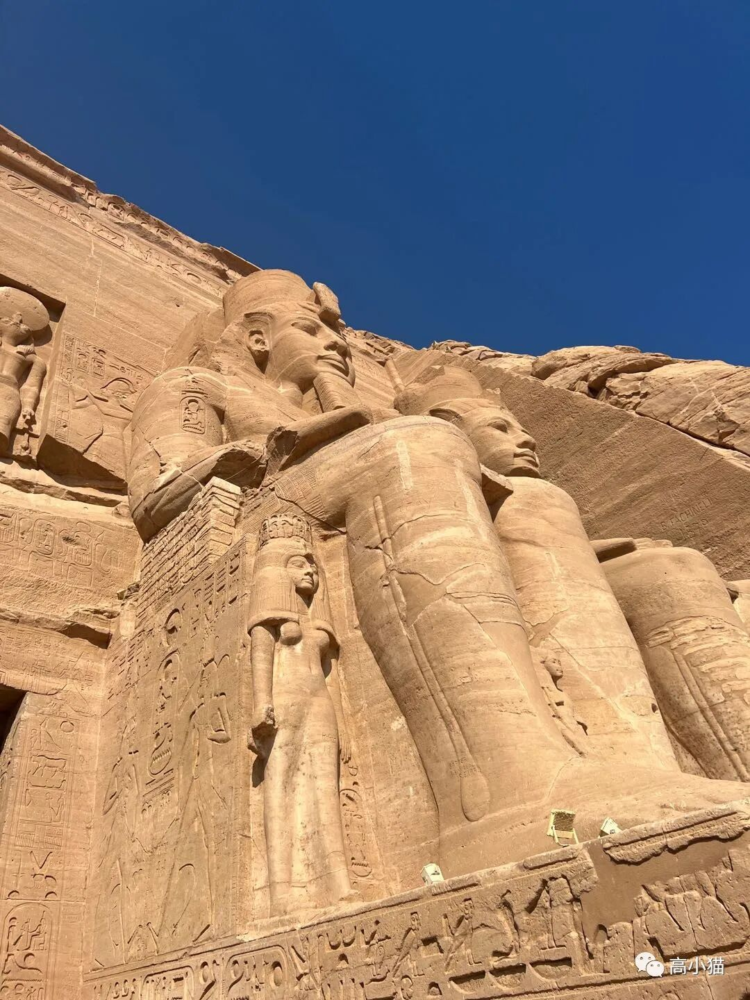
从脚下看，旁边的小人就是尼菲尔泰利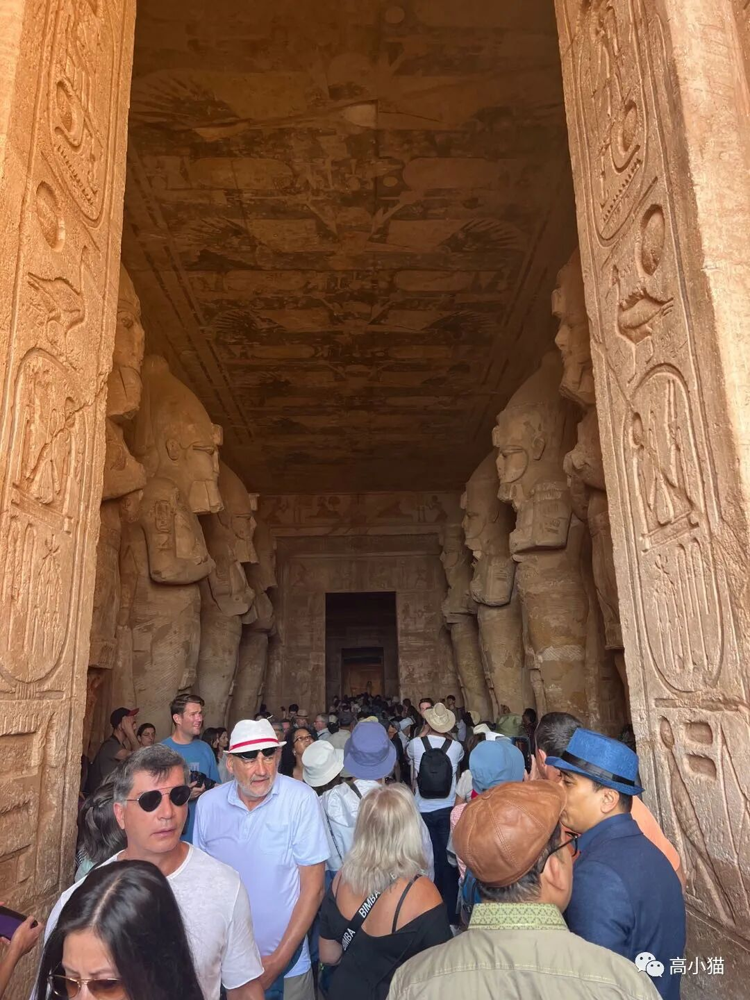
人超级多，百姓大厅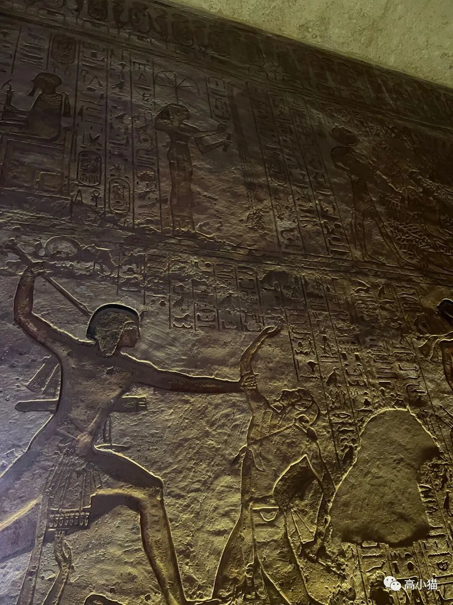
拉美西斯二世打败叙利亚国王的故事虽然他这么雕刻的，但是实际上他并没有打败叙利亚国王，而是与对方和亲了。
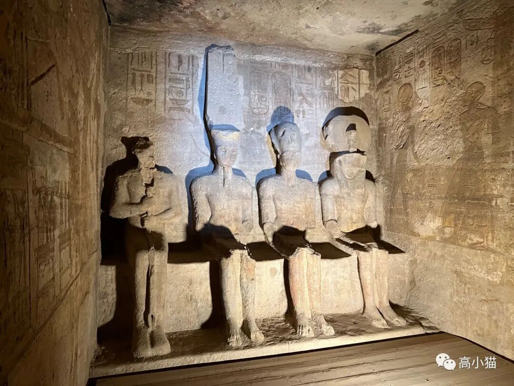
最里面的神龛，雕像是三个神和他自己这个地方还挺厉害的，据说一年有两天，外面的阳光会照在这里面三尊神像的脸上。这两天分别是拉美西斯二世出生的日子，以及他登基的日子。
之所以最左边的那尊不照到，是因为那个是黑暗之神萨特。
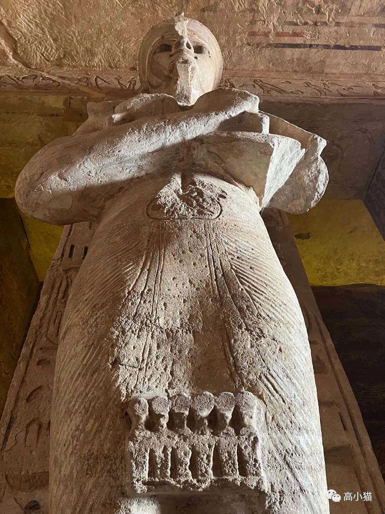
全部都是拉美西斯二世的雕像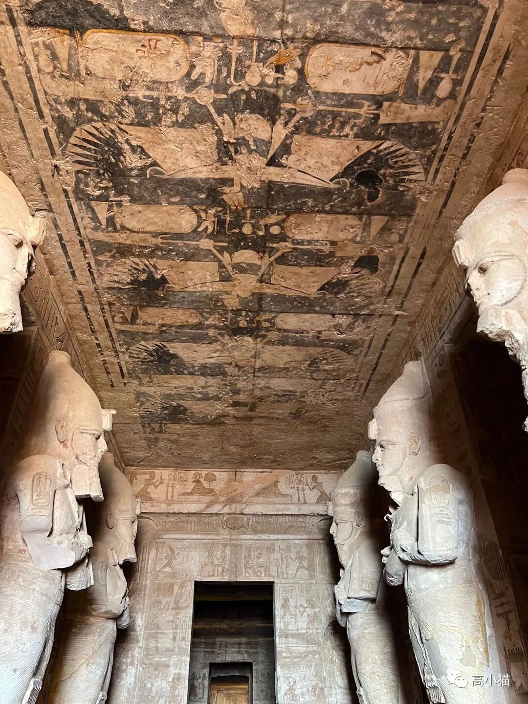
天花板看完拉美西斯二世的神庙，旁边就是他最爱的老婆（他的老婆似乎有几十个），尼菲尔泰利的神庙。不过前面雕像有六个，拉美西斯二世的雕像还是有4个。
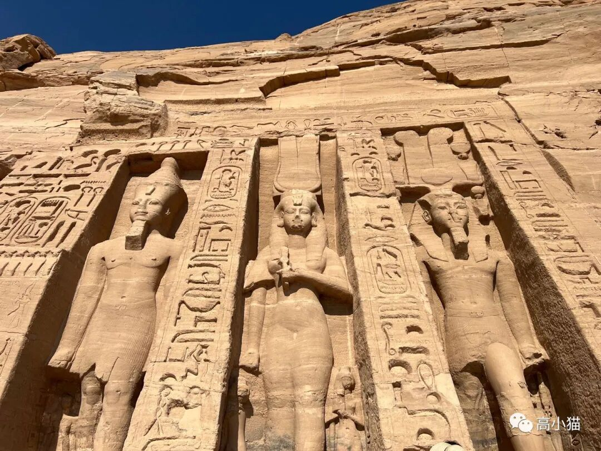
中间的是尼菲尔泰利，这是神庙的一侧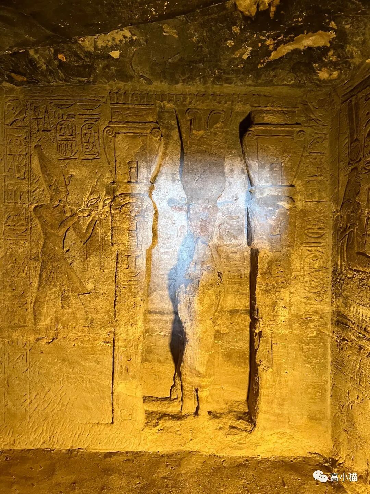
最里面的神龛海市蜃楼
在沙漠里最有名的气候可能就是海市蜃楼了。而在从阿布辛贝沙漠回来的路上，我们就经过了这么一个地方。
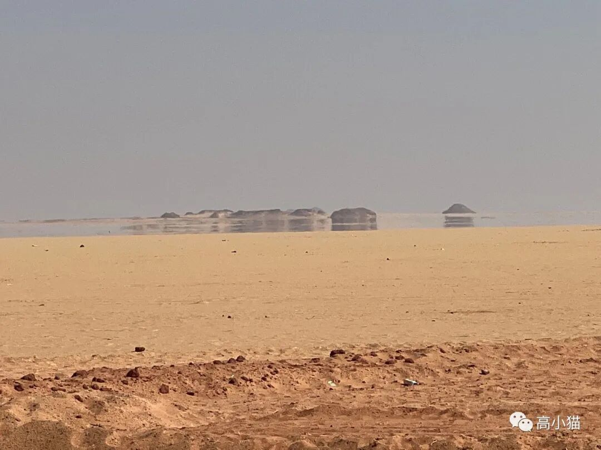
用肉眼很难想象，前面其实并没有水，那几个小山坡也都是假的。
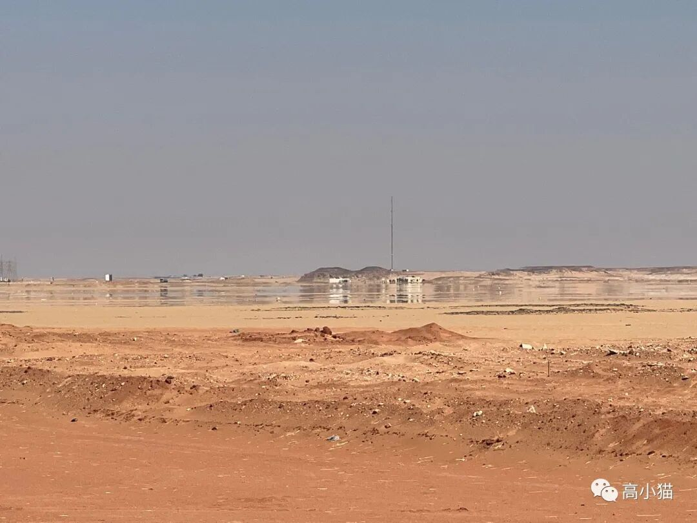
这个后面的小山坡是真的，但是水塘是假的，两者还是有一些区别的。
康翁波神庙
下午回到游轮以后，游轮就沿着尼罗河，从阿斯旺往开罗的方向开了。大约到了晚上的时候，我们就到达了一个沿途的城市，康翁波（kom umbu）。
这个地方有一座双子神庙，分别供奉着黑暗神，也就是鳄鱼神sobic，以及太阳神，也是老鹰神horus。
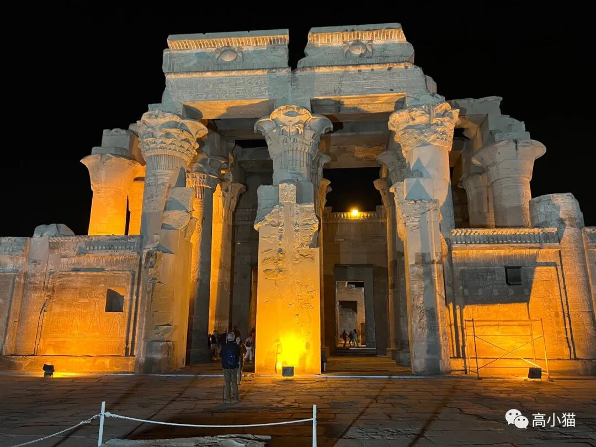
两边分别对应两个神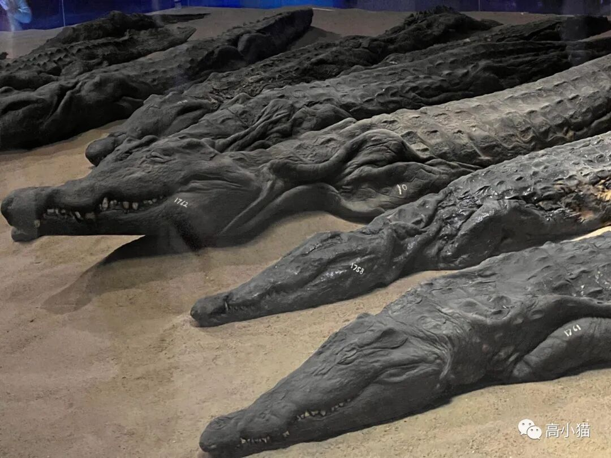
神庙旁边有个博物馆，里面有大量的鳄鱼木乃伊相传有一个法老之前因为某些事情，非常讨厌鳄鱼，于是就下令杀死大量的鳄鱼。而这个神庙里的一些祭祀非常崇拜鳄鱼，他们也没办法对抗，就只能把处死了的鳄鱼尸体做成木乃伊，希望它们以后可以复活。
这一天结束以后，晚上游轮会继续往开罗方向（尼罗河下游）开，前往艾德福这个城市。
完